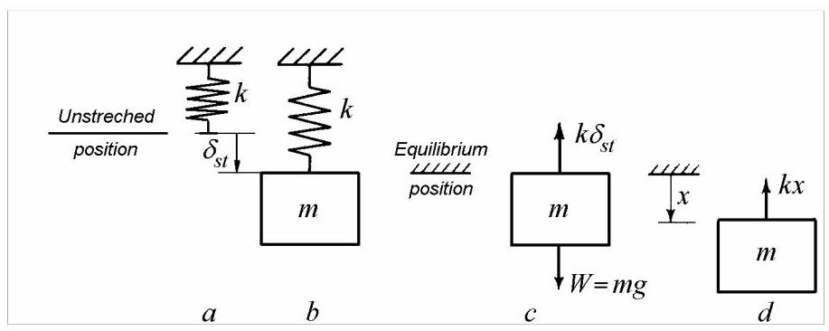

1. 振动系统建模
振动是日常生活中普遍存在的动力学现象：从心跳与行走、树木在狂风中的摇曳、船只于波涛中的颠簸，到乐器与扬声器振膜的振动、汽车在波纹路面上的弹跳、建筑因风或地震而摇摆，以及传送带与道路钻机的振动。
通常，人们仅将“振动”一词用于指代那些不受欢迎、会产生噪声或可能导致破坏性应力水平的重复运动。振动对人类、建筑及机械的影响是主要关注点。对振动现象进行建模，意味着描述振动体的结构与参数、激励函数以及响应水平。
本章作为导论，聚焦于定义与分类，以概览振动分析中所用的主要概念
1.1 振动与振荡
《牛津词典》给出的定义是：“vibration，名词，振动、振荡；(物理)快速往复运动，尤指流体或弹性固体在平衡被破坏时其各部分的运动”。由此可见，所有气态、液态或固态物质都能产生振动，事实上，构成物质的粒子亦然。
一般而言，振荡（oscillations）是某一状态参数围绕稳定平衡位置（或轨迹）对应值的变动。振动则是由弹性恢复力引起的振荡。为避免混淆，柔性梁或弦产生的是振动，而摆产生的是振荡。
在工程实践中，通常将“振动”一词主要用于指不期望的周期性运动。在音乐领域则相反，因为所有乐器都利用周期性振动发声。可以说，工程中的振动更类似于声学中的噪声：一种令人厌烦却又在某种程度上无法避免的机器副产物，既可能表现为外部噪声，也可能表现为内部损伤。除了有害振动外，还有一些装置的运行正是基于振动运动，例如：混凝土振捣器、打桩振动器、土壤压实机、振动筛、疲劳试验机等。
所有具有质量和弹性的物体都能产生振动。振动系统既具有动能——因速度而储存在质量中，也具有势能——以应变能形式储存在弹性元件中。振动的一个显著特征是势能与动能的周期性相互转化。在保守系统中，若无能量耗散，总能量保持恒定。在最大位移幅值处，瞬时速度为零，系统仅具有势能；在静平衡位置，应变能为零，系统仅具有动能。最大动能必等于最大势能，通过令二者相等即可求得振动的固有频率，这就是瑞利法（Rayleigh's method）的基础。
振动系统会受到阻尼作用，因为能量会通过耗散或辐射而损失。阻尼导致自由振动衰减、激励与响应之间产生相位差，并解释了为何受迫振动的响应不会无限增大。
1.2 离散系统与连续系统
完全确定振动系统在任一瞬时的构形所需的独立坐标数目，即为该系统的自由度数。
因此，若要描述系统中每个粒子的运动，自由度数需为无穷。然而，出于实用目的，可采用与实际系统动力学特性近似、且自由度数目较少的系统。
决定为某一分析系统赋予多少自由度的准则具有实际性质。例如，某些可能的系统运动可能幅度极小，因而在实际中无关紧要；系统中部分或大部分粒子的运动可能几乎相同，从而可将这些粒子合并为一个刚体；激励力的频率范围可能很窄，使得系统仅有单个或少数几个固有频率可能引发共振；经历相似运动的粒子群可视为单一物体，从而减少需考虑的自由度数。所有这些实际考量引出了集中质量(lumped masses)的概念，即由无质量柔性构件连接的刚体。利用这种近似的集中参数或离散系统所预测的运动，往往与实际振动足够接近，能够满足所有工程需求，并提供有用的设计数据及可接受的振动限值。
在某些系统中，可进一步作第二级近似，即考虑弹性构件的质量。这仅在柔性构件的分布质量与被视为刚体的系统部件质量相当时才必要。
最后，许多具有实际意义的系统因其形状极其简单，可被视为拥有无限自由度的系统。这类分布参数(distributed-parameter)或连续系统(continuous systems)可被建模为弦、梁、板、膜、壳及其组合。
在大多数工程应用中，几何复杂的结构被离散化的数学模型所取代。一种成功的离散化方法是有限元法(finite element method)。无限自由度系统被替换为具有相同行为的有限自由度系统。实际结构被(假设性地)划分为定义明确的子域(有限元)，这些子域足够小，使得位移场的形状可以近似而不致产生过大误差，仅需确定其幅值。随后，所有单个单元以如下方式组装：单元在节点或界面特定点处的位移相互匹配，内部应力与施加于节点的等效载荷保持平衡，且满足给定的边界条件。建模误差包括单元类型选择不当、形函数错误、支撑条件不合理以及网格质量差。
1.3 简单振动系统
在工程师所设计的机器与结构中，数量惊人的实际振动问题，均可通过将真实系统设想为由单一刚体构成、其运动可用单一坐标描述的方式，以足够高的精度加以处理。
实际上，最简单可想象的系统由运动受关注的物体及其固定周围介质组成，运动即相对于该介质测量。处理此类简化系统的问题可分为四步：第一步，确定系统的哪一部分为刚体，哪一部分为柔性构件；第二步，计算刚体及柔性部件的动力学参数值；第三步，建立等效系统的运动方程；第四步，在给定自由或受迫振动条件下求解这些方程。亦可采用动能与势能方法替代后两步。
前两步需依赖判断与经验，而此二者唯有通过实践——即反复假设等效系统、预测其运动并与真实系统实测结果比对——方能获得。模型验证与确认可能要求更新系统参数乃至模型结构。解的充分性在很大程度上取决于基本简化假设的制定技巧。首要抉择在于线性模型与非线性模型之间的权衡。阻尼估计亦为误差来源之一，因阻尼无法如质量与刚度般精确计算。后两步仅系数学家既定方法之应用，真正的工程工作集中于前两阶段，后两阶段可视为“按方抓药”。
第2章与第3章论述单自由度系统，第4章与第5章探讨离散系统，第6章专论直梁与杆。
1.4 振动运动
根据产生或维持振动运动的原因，可区分为：自由振动（free vibrations），由冲击或初始位移产生；受迫振动（forced vibrations），由外力或运动激励产生；参数振动（parametric vibrations），因外部原因导致系统参数变化而引起；自激振动（self-excited vibrations），由系统内在机制产生，通过将系统振荡激励所关联的均匀能量源的能量转换而实现。
若系统偏离平衡构型后被释放，其将以自由振动方式振动。若系统某部分受到冲击，系统亦将自由振动。鼓类乐器被敲击，琴弦被拨动，均属此例。当作用于系统的力仅源于系统自身运动时，即存在自由振动。自由振动的频率是系统自身质量、刚度与阻尼特性的固定函数，称为固有频率（natural frequencies）。对任一特定系统，它们具有确定的恒定值。当物体所有质点以同步谐波运动时，其变形形状即为固有模态（natural mode shape）。
在外部力激励下发生的振动为受迫振动（forced vibrations）。任何系统中的外力，其反作用力作用于不属于所研究系统的物体上。激励函数可以是简谐、复杂周期、脉冲、瞬态或随机。
当系统受到周期外力激励，且该外力频率等于或接近系统某一固有频率时，即使扰动力幅值很小，随后的振动运动也会变得相对较大，此时系统处于共振（resonance）状态。例如，在恰当时刻推动的秋千。其他例子包括齿轮系统在啮合频率下的振动、多缸发动机轴在点火频率下的扭转振动、滚动轴承在滚珠通过频率下的振动等。
由于阻尼的存在，共振频率会偏离固有频率，其偏离量随阻尼增大而增大。所幸在实际工程中，这一差异极小，除非特意施加极高阻尼，否则在大多数工程结构中均可忽略。
共振是指：在幅值恒定的外力作用下产生最大运动，或维持指定运动所需外力最小的状态。共振由频率、响应幅值及频率响应曲线带宽共同定义。避免大幅共振振动可通过：a) 改变激励频率；b) 调整刚度或质量以改变固有频率；c) 增加或引入阻尼；d) 增设动力吸振器。
当激励频率为相关线性系统固有频率的整数倍时，由马蒂厄（Mathieu）方程描述的非线性单自由度系统会出现参数不稳定性，称为参数共振。
主参数共振发生在激励频率为固有频率两倍时。亦存在分数阶参数共振。若激励频率与两个及以上固有频率满足整数系数的线性关系，多自由度系统亦可发生参数共振。
参数共振是一种振动状态，能量在共振时从外部源流入系统，使系统响应幅值增大。该能量取决于系统固有频率与参数变化频率。
在共振振动与自激振动中，系统均以自身固有频率振动。但前者为受迫振动，其频率等于外部激励频率的整数倍比；后者则与任何外部激励频率无关。
自激振动中，维持运动的交变力由运动本身产生或控制。运动停止时，交变力即消失。典型实例包括：琴弓激振的小提琴弦振动、刀具“颤振（chatter）”、粉笔在黑板上划动、开门时的门铰尖叫、湿指摩擦玻璃杯口发声。还可列举工业烟囱的涡激振动、输电线的驰振与颤振、流体轴承中转子的油膜涡动、提升阀振动、车轮摆振等。
参数振动发生于刚度可变的系统，如非圆截面旋转轴、变长摆、齿轮扭转系统等
1.5 阻尼
阻尼表征系统能量的耗散，通常表现为运动能量向热能的转化。由辐射引起的能量损失（有时称为几何阻尼）不在本书讨论之列。
最常见的四种阻尼机制为：a) 库仑（滑动摩擦）阻尼，其阻尼力幅值与速度无关；b) 粘性阻尼，阻尼力与速度成正比；c) 速度-\(n\)次方阻尼，阻尼力与阻尼器两端相对速度的\(n\)次方成正比；d) 结构（滞回、内部、材料）阻尼，阻尼力与偏离静平衡位置的位移幅值成正比。遗传阻尼与间隙阻尼亦为可能存在的阻尼机制。
从微观视角审视，多数阻尼机制均涉及阻碍物理系统某部分运动（速度）的摩擦力，进而导致热能损耗。例如，库仑摩擦力源于两相对滑动表面间的相互作用，一旦克服初始静摩擦（粘滞），该滑动力即与速度无关。
滞回阻尼可视为材料分子层间或铆接/螺栓连接结构组件间的滑动摩擦机制，其摩擦力与偏离未扰动位置的位移成正比，且与速度同相位。
粘性阻尼发生于粘性流体分子间的相互摩擦，产生与物体穿过流体速度成正比且方向相反的阻力。实际油阻尼器与减震器提供的摩擦力与相对速度的某非整数次方成正比。
结构与非线性阻尼机制对质量激励单自由度系统响应的影响将在第3章详细论述。离散振动系统研究中仅考虑粘性阻尼与结构阻尼。
2. 简单线性系统
任何振动系统均具有质量与弹性。最简单的振动系统由质量块与线性弹簧组成。当系统的运动可用单一坐标描述时，该系统具有一个自由度。借助这一简单模型，可引入固有频率、共振、拍振及反共振等基本概念。振动过程中，能量通过阻尼耗散。阻尼限制了共振时的运动幅度，降低自由振动的振幅，并在激励与响应之间引入相位差。由于阻尼无法像质量和刚度那样通过计算获得，其测量成为一项重要课题。
2.1 无阻尼自由振动
质量-弹簧系统在无外部激励条件下的自由振动为简谐运动，其频率仅取决于系统参数——质量与刚度，而与运动初始条件无关。该频率称为固有频率（natural frequency），因其为系统内在属性。固有频率的计算基于弹簧元件的刚度值与质量元件的惯性值。
2.1.1 质量-弹簧系统
图2.1所示系统由刚度为\(k\)的线性弹簧和质量为\(m = W/g\)的重物\(W\)组成，其中\(g\)为重力加速度。重物被限制在垂直方向无旋转地运动。刚度\(k\)定义为弹簧单位长度变化所对应的力的变化量。
图 2.1, \(a\) 所示为未拉伸的弹簧。当质量 \(m\) 悬挂于弹簧上时（图 2.1, b），其下端向下移动并静止于由弹簧静变形 \({\delta }_{st}\) 决定的静平衡位置。在此位置，作用于质量向下的重力 \(W = {mg}\) 与弹簧向上的弹力 \(k{\delta }_{st}\) 相平衡（图 2.1, c），故静变形为
若质量偏离静止位置，系统将发生自由振动。为建立运动方程，将振动位移原点选在静平衡位置，从而仅需考虑偏离该位置产生的力。

图 2.1
规定所有向下矢量为正，在位置 \(x\) 处作用于质量的弹性力为 \(- {kx}\)（图 2.1, d）。其运动由牛顿第二定律描述
可写为
其中字母上方的点表示对时间的导数。
方程 (2.2) 为齐次二阶微分方程，其通解形式为
其中
为系统的无阻尼固有圆频率
无阻尼固有频率为
任意常数 \({C}_{1}\) 和 \({C}_{2}\) 由运动的初始条件确定。在最一般的情形下，系统可由位置 \({x}_{0}\) 并以速度 \({v}_{0}\) 启动，于是通解为
通解的另一种形式为
其中两个任意常数由下式给出
式 (2.7) 表明，弹簧-质量系统的自由振动为简谐振动，并以固有频率 \({f}_{n}\) 进行。量 \(A\) 表示相对于静平衡位置的位移幅值，\(\phi\) 为相位角。圆频率 \({\omega }_{n}\) 定义了以弧度/单位时间为单位的振动速率，\({2\pi }\) rad 对应一次完整的振动循环。
振动频率为单位时间内完整振动循环的次数，是周期的倒数
振动周期是运动开始重复自身所需的时间。
无阻尼固有频率可利用式 (2.1) 表示为静挠度的函数
其中 \(g = {9.81}\mathrm{\;m}/{\mathrm{s}}^{2}\)。